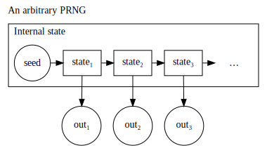

1. Introduction¶
Computer systems often need to produce random behaviour. Computer game enemies need to walk in unpredictable directions; cryptosystems need unpredictable keys; Monte Carlo simulations need random values.
Producing sequences of truly random numbers from a computer isn’t easy. Computers are regularised, deterministic machines. With care we can obtain true random sequences from quantum fluctuations, radio noise, lava lamps and many other sources. However most of these don’t fit easily into a computer, or provide a low rate of random bits.
PCs extract random data from noise on analog inputs (e.g., audio), timings of thread switching and hard drive behaviour, and your mouse movements. However a HTTPS webserver needs some random data for every connection; for busy websites this is far beyond what can be obtained without a specialised Hardware Random Number Generator. But we can use algorithms to make what entropy we have stretch further.
1.1. Recognising Sequences¶
Consider the following sequence of numbers:
1, 2, 3, 4, 5, …
You’d guess the next number is 6. Then 7. And so forth. You can be fairly sure what the next number will be just from looking at it.
Now try this sequence:
2, 5, 11, 23, 47, …
You can find a pattern here. These sequences were both quite regular and predictable.
With a pseudorandom sequence, the ‘rule’ of what number comes next isn’t immediately obvious:
301205, 838705, 071590, 755875, 141280, …
There’s an algorithm at work generating each number. This differs from a true random sequence, where each number would arise from observing random physical processes. But the same principle is at work: each number should be uncorrelated with the other outputs.
1.2. Pseudo-Random Number Generators¶
The generator receives a seed value and transforms that into its internal state. For some PRNGs that might mean a sequence of bit operations, for others it might involve a step akin to encryption.
Then the generator outputs a value. This is transformed from the internal state, again by some sort of obfuscation routine. Then the generator calculates the next internal state - and so forth.
Generating a sequence that, “seems random,” is very tricky. Exercise 1 discusses one of the early approaches and how easy it is to spot patterns in the output (that is, disprove its randomness).
1.3. Aims and Objectives¶
The objective of this experiment is to:
- Understand that random number generation is important in many contexts.
- Show it is possible to attack security systems using non-cryptographically-secure PRNGs.
- Show that it is possible to attack systems using CSPRNGs if it is used in an insecure manner, e.g. poor Seeding.
- Investigate patterns in random number generation output.
1.4. Prerequisites, Equipment and Software¶
This experiment requires the ability to write small programs in Python. You will also need to make basic use of the Linux command line to run your program and the Usemin file monitor to manage and edit files. (see Virtual Machine documentation).
1.5. Ethical Issues¶
There are no specific ethical issues in conducting the experiment.
As is common in security teaching, the techniques described here could be used to attack systems but you must behave responsibly and ethically toward other people, their data and systems. The writing or use of tools to gain unauthorised access to systems is a criminal offence.